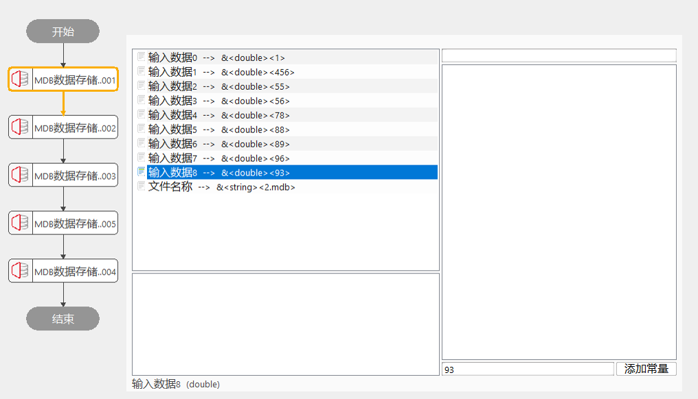
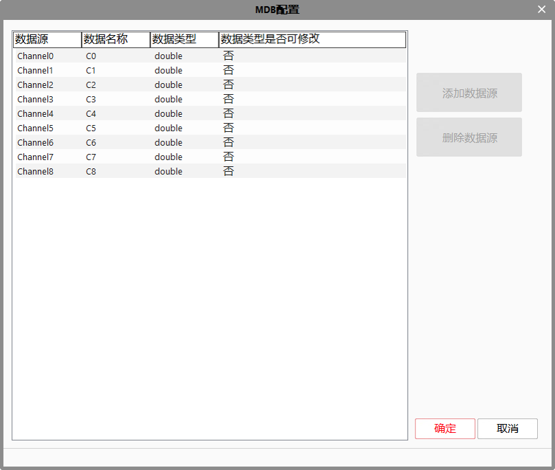

MDB数据存储工具能生产过程中收集的基础类型数据，并创建数据表，保存数据到数据表中，转储为*.mdb格数的数据库文件。它一共可以收集13种的数据类型。主要可以收集的数据类型有：double、int、bool、string、int64、char、float、long、short、wstring、unsigned char、unsigned long和 unsigned short类型。
生产程序为通过通信上传数据至“MDB文件生成插件”实时上传，客户通过“数据上传软件”实时读取MDB文件中数据。
按照命名创建MDB数据库文件，按照名称创建table表格，按照规则存储数据到table表格中。

高级界面为MDB存储工具的数据表配置，配置完成后无法再次修改。配置完成后可使用数据链，进行数据关联。

| 现象描述 | 解决方法 |
|---|---|
| 数据表名未设置 | 工作表名称：不能含有特殊字符，不能以数字开头 |
| 无效路径 | 重新设置MDB文件路径 |
| 无效的文件名称 | 设置 存储的文件名称。注：必须以.mdb为文件后缀 |
| 运行失败 | 检查 存储的文件名称。是否.mdb为文件后缀 |
| 运行失败 | 检查 数据库是否链接 |
| 运行失败 | 检查MDB模板文件是否存在 |
| 参数名称 | 参数说明 |
|---|---|
| MDB文件路径 | 存储文件的位置，即路径。 |
| 工作表名称 | 保存数据的表格名称。注：数据表不能以特殊字符和数字开头。 |
| 是否使用模板 | 是，使用之前的模板；否，不使用模板。 |
| 文件名称 | 存储的文件名称。注：必须以.mdb为文件后缀。 |
| 数据链 | 高级属性里面的数据源，最多可以新建64路，每一路相当于数据库表里面的一列 |
| 参数名称 | 参数说明 |
|---|---|
| 执行时间 | 工具执行的时间 |
| 执行结果 | true：成功；false：失败 |
参见“\Samples\MDB数据存储工具.gvp”。